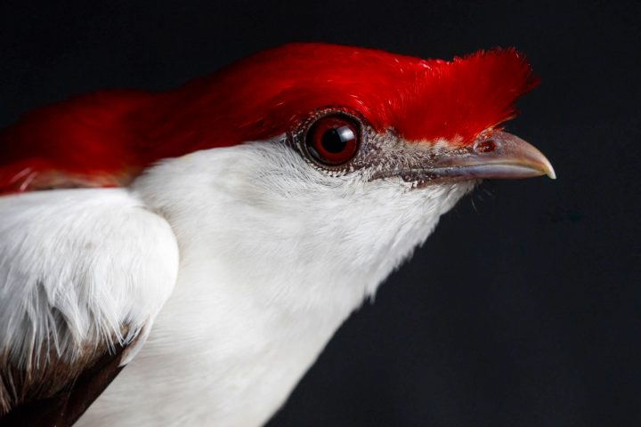
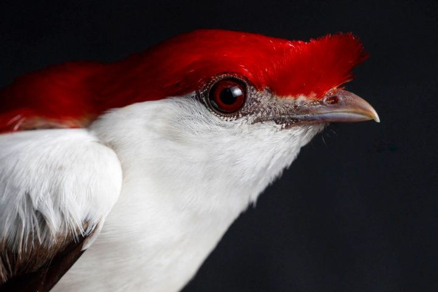
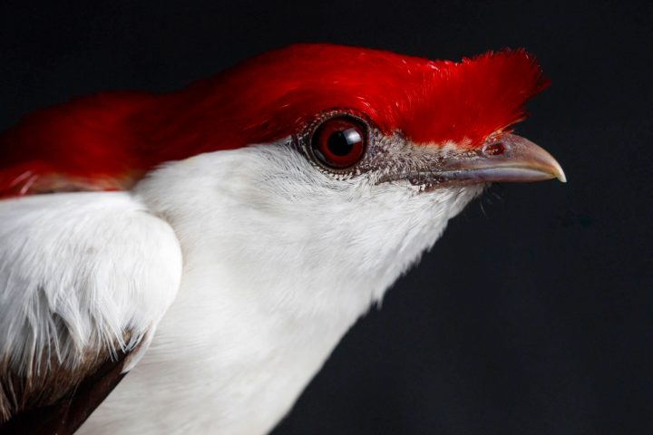

O soldadinho-do-araripe é uma espécie brasileira que está criticamente ameaçada de extinção!

O soldadinho-do-araripe é uma ave que tem como habitat a Caatinga,
principalmente no estado do Ceará.
Foi descoberto em 1996 na Chapada do Araripe, região Nordeste do Brasil.
Segundos os seus descobridores, o soldadinho-do-araripe é encontrado
somente nos municípios de Barbalha, Crato e Missão Velha.
A degradação do seu habitat contribuiu para que esta espécie fosse
considerada como criticamente ameaçada de extinção,
pois estima-se que aproximadamente 60 casais maduros foram mortos.
Pesquisadores apontam que a área que o soldadinho-do-araripe vive sofre com
a diminuição dos recursos hídricos, prejudicando a sobrevivência da espécie.